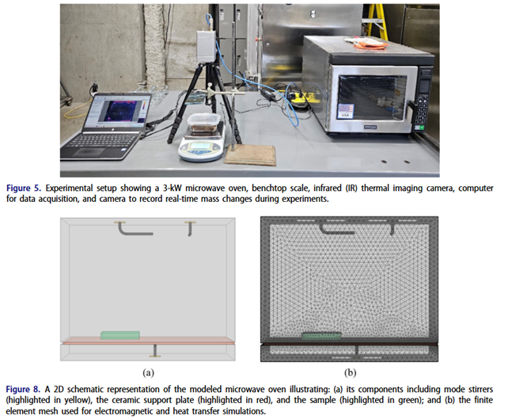
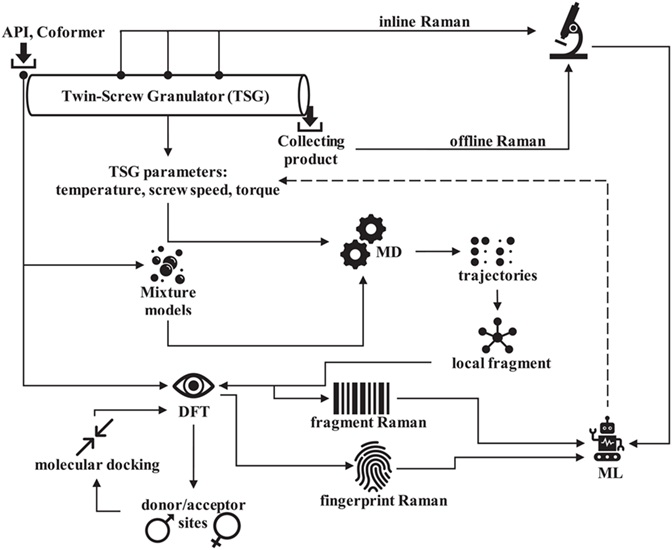
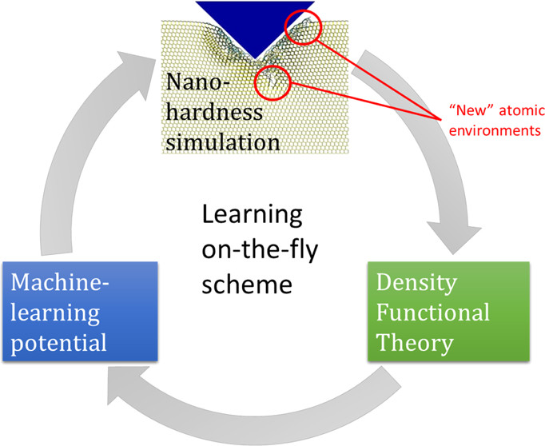
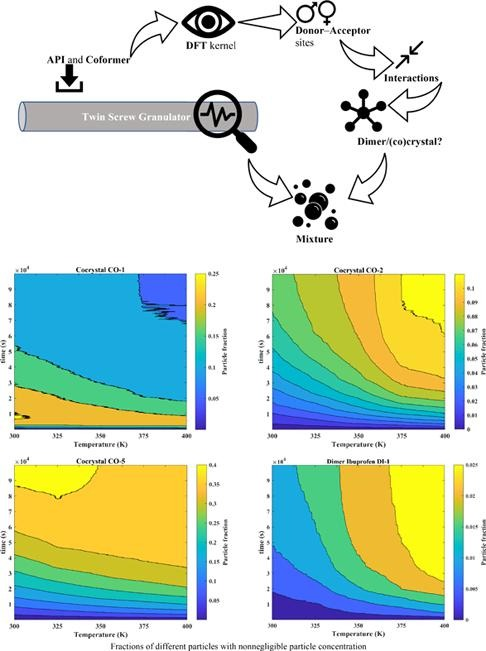
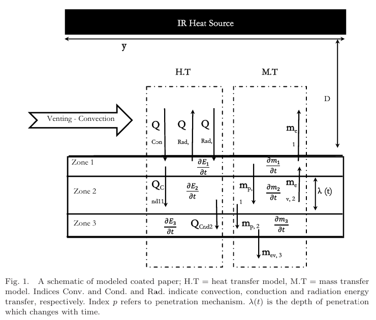

Publications
- Microwave Drying of Minerals with Moisture-Dependent Properties
- Critical Impact of Aggregation in Degradation of PFOS in Saline Streams
- The Surprising Role of PFOA Dimerization in UV/S Processes
- Raman Spectroscopy based Controller for Cocrystallization
- Machine Learning Interatomic Potentials for Nanohardness Prediction
- Molecular Level Analysis of Cocrystal Formation
- Incomplete Cocrystallization of Ibuprofen and Nicotinamide
- Variable Density Mass Transfer Correction
- Falling Film Mass Transfer & Penetration Theory
- Thermokinetic Model of Phase Inversion
- Modeling Drying of a Coated Paper
Microwave Drying of Minerals with Moisture-Dependent Properties
In the paper Microwave drying of minerals with moisture-dependent properties: Experimental and numerical analysis, we built and evaluated numerical models using Finit Element Method (FEM) in COMSOL Multiphysics in a sequential fashion for heat transfer due to microwave irradiation in a batch microwave in presence of mode stirrers. We showed that microwave drying demonstrates strong potential as an alternative to fossil-fuel-based drying of sulfur-bearing minerals. The developed coupled electromagnetic–thermal model accurately predicts temperature evolution and moisture removal when moisture-dependent material properties are incorporated. Microwave drying offers a viable pathway toward lower-emission mineral processing while maintaining process control and material integrity. We showed safe drying below sulfur phase transition temperature, achieved high drying efficiency (~72%), stable extraction rate at higher energy dosages (~0.25 g per kWh/t), and strong agreement between numerical and experimental data.

Critical Impact of Aggregation in Degradation of PFOS in Saline Streams
In the paper Degradation of PFOS in concentrated saline waste streams using UV/ Sulfite process: Critical impact of aggregation, we showed that PFOS aggregation in saline waste streams can mislead accurate degradation assessments. We also found that manipulating operational parameters cannot mitigates aggregation, and the addition of CTAB disrupts PFOS aggregates and enhances UV/S degradation. Molecular simulations reveal CTAB enables micellar reorganization and delivery.

The Surprising Role of PFOA Dimerization in UV/S Processes
In the paper Decomposition of PFOA in IEX regeneration wastewater: Comparison of UV/sulfur-based processes, key parameters and submicellar aggregates on degradation kinetics, we revealed the significance of PFOA dimerization in UV/sulfite degradation. We showed that PFOA exists as dimers in saline waste streams, and this dimerization affects the degradation kinetics significantly. We also found that excluding dimerization in degradation models overestimates the required fluence for treatment.

Raman Spectroscopy based Controller for Cocrystallization
In the paper A molecularly enhanced proof of concept for targeting cocrystals at molecular scale in continuous pharmaceuticals cocrystallization, we demonstrated that Raman spectroscopy enables molecular scale targeting of cocrystals in continuous pharmaceutical cocrystallization by analyzing the vibrational modes of the molecules to identify the formation of cocrystals.

Machine Learning Interatomic Potentials for Nanohardness Prediction
In the paper Nanohardness from First Principles with Active Learning on Atomic Environments, we develop machine learning interatomic potentials (MLIPs) for nanohardness prediction in various materials using density functional theory (DFT) data and active learning.

Molecular Level Analysis of Cocrystal Formation
In the paper Molecular engineering of cocrystallization process in holt melt extrusion based on kinetics of elementary molecular processes, we found that operating at low temperatures (especially lower or very close to the melting temperature of ibuprofen) for longer residency times creates a safe route for maximizing the presence of ibuprofen and nicotinamide co-crystals.

Incomplete Cocrystallization of Ibuprofen and Nicotinamide
In the paper Incomplete cocrystalization of ibuprofen and nicotinamide and its interplay with formation of ibuprofen dimer and/or nicotinamide dimer: A thermodynamic analysis based on DFT data, we addressed the molecular thermodynamics of mixtures of ibuprofen and nicotinamide, with special focus on the possibility of formation of dimers of ibuprofen–ibuprofen or dimers nicotinamide– nicotinamide and their corresponding interplay with mixture phase behaviour.

Variable Density Mass Transfer Correction
In the paper A note on the composition-dependency of the density within the mass transfer layer, we derived the equation for the mass transfer correction factor Rn, which accounts for the effect of varying density (ρ) in a binary mixture. The model is particularly relevant for high-flux gas absorption or evaporation where the standard constant-density assumptions fail.

Usage Instructions
- Save the script as
script_name.pyand run it from the terminal as:python script_name.py
1. Rn as β and ρ12 vary
import numpy as np
omg1=np.linspace(0.00001, 0.99999, 25)
betta=[-1, -0.75, -0.5, -0.25, 0, 0.25, 0.5, 0.75, 1]
for BETTA in betta:
for OMG1 in omg1:
RHO12 = 1/(1 - BETTA * OMG1)
Rn=1 + (1/RHO12 - 1) * (1/np.log(1/(1 - OMG1)) - (1 - OMG1)/OMG1)
print (BETTA, RHO12, Rn)
2. Rn as β and ω1 vary
import numpy as np
omg1=np.linspace(0.00001, 0.99999, 25)
betta=[-1, -0.75, -0.5, -0.25, 0, 0.25, 0.5, 0.75, 1]
for BETTA in betta:
for OMG1 in omg1:
RHO12 = 1/(1 - BETTA * OMG1)
Rn=1 + (1/RHO12 - 1) * (1/np.log(1/(1 - OMG1)) - (1 - OMG1)/OMG1)
print (BETTA, OMG1, Rn)
3. Rn as ρ12 and ω1 vary
import numpy as np
omg1=np.linspace(0.00001, 0.99999, 25)
rho12=[0.001, 0.01, 0.1, 0.25, 0.5, 0.75, 1, 1.5, 2, 5, 10]
for RHO12 in rho12:
for OMG1 in omg1:
Rn=1 + (1/RHO12 - 1) * (1/np.log(1/(1 - OMG1)) - (1 - OMG1)/OMG1)
print (RHO12, OMG1, Rn)
Falling Film Mass Transfer & Penetration Theory
In the paper Revisiting ‘penetration depth’ in falling film mass transfer, we calculated mass transfer characteristics in falling liquid films. We compared the Infinite Penetration (Higbie's theory) and Finite Penetration models to determine how deep a solute penetrates a moving film under various physical conditions.

Two python scripts are provided. One analyzes how different diffusion coefficients impact the penetration depth and flux (varD.py). The other analyzes the effect of film flow rate on mass transfer efficiency (varG.py).
Parameters
L = 1 # Wall length (m)
gamma = 0.05 # Film flow rate (kg/m.s)
cAi = 0.0366 # Interfacial concentration
Usage Instructions
- Save the script as
script_name.pyand run it from the terminal as:python script_name.py
Script for varD.py
# (in)finite penetration depth : varying D
import numpy as np
import math
# test data
L=1 # wall lenght
gamma=0.05 # film flow rate kg/m.s
cA0=0 # initial concentration
cAi=0.0366 # interfacial concentration
var=[1.0, 2.0, 2.5, 5.0, 7.0, 8.0, 9.0]
varD=[vard/1000000000 for vard in var]
Rho=998 # kg/m3
Mue=0.000894 # kg/m.s at STP
g=9.807 # m/s2
YY=[0.00000000001, 0.0000000001, 0.000000001,
0.00000001, 0.0000001, 0.000001, 0.00001,
0.0001, 0.001, 0.01, 0.05, 0.1, 0.25, 0.5, 0.75, 1]
Y=[L*y for y in YY]
# film thickness
delta=((3*Mue*gamma)/((Rho**2)*g))**(1/3)
u=gamma/(Rho*delta)
# z-coordinate
Z=np.linspace(0, delta, num=50)
for D in varD:
b=(2*D)/(3*u)
infinity=100
for y in Y:
# finding kisi from BC2
guesslist=np.logspace(0, 10, num=10000)
guesslist=delta/guesslist
guesslist=np.fliplr([guesslist])[0]
KICI=[delta]
for kisi in guesslist:
sigma=0
for n in range(infinity):
Sin=((-1)**n)/(2*n+1)
lmbda=((2*n+1)*math.pi)/(2*kisi)
lmbda2=lmbda**2
Expot=(-1)*lmbda2*b
Expt=y*Expot
Exp=np.exp(Expt)
An=Sin*Exp
sigma += An
Err=sigma - (math.pi/4)
if abs(Err)==0:
KICI.append(kisi)
kisi=min(KICI)
# calculating kc and NA
Sum=0
for n in range(infinity):
lmbda=((2*n+1)*math.pi)/(2*kisi)
lmbda2=lmbda**2
Expot=(-1)*lmbda2*b
Expt=y*Expot
Exp=np.exp(Expt)
An=Exp
Sum += An
kc_infY=(2*D/kisi)*Sum
NA_infY=kc_infY*(cAi - cA0)
kc_infN=((3*u*D)/(2*math.pi*y))**0.5
NA_infN=(cAi-cA0)*kc_infN
# kcbar calculation
Sum=0
for n in range(infinity):
lmbda=((2*n+1)*math.pi)/(2*kisi)
lmbda2=lmbda**2
Expot=(-1)*lmbda2*b
Expt=L*Expot
Exp=np.exp(Expt)
An=Exp/((2*n+1)**2)
Sum += An
kcbar_infY=(12*u*kisi/(L*(math.pi**2)))*((math.pi**2)/8 - Sum)
kcbar_infN=((6*u*D)/(math.pi*L))**0.5
# calculating cA
for z in Z:
Sum=0
for n in range(infinity):
lmbda=((2*n+1)*math.pi)/(2*kisi)
lmbda2=lmbda**2
Expot=(-1)*lmbda2*b
Expt=y*Expot
Exp=np.exp(Expt)
Sin=math.sin(z*lmbda)
An=Sin*Exp/(2*n+1)
Sum += An
cA_infY=cA0+(cAi-cA0)*(1-(4/math.pi)*Sum)
Exp_infN=0.5*(((3*u*(z**2))/(2*D*y))**0.5)
cA_infN=cA0+(cAi-cA0)*(1-math.erf(Exp_infN))
print (D, y, z, delta, kisi, cA_infY, cA_infN, NA_infY, NA_infN, kc_infY, kc_infN, kcbar_infY, kcbar_infN, gamma, u)
Script for varG.py
# (in)finite penetration depth : varying Gamma
import numpy as np
import math
# test data
L=1 # wall lenght
varG=[0.01, 0.02, 0.05, 0.08, 0.10, 0.20]
cA0=0 # initial concentration
cAi=0.0366 # interfacial concentration
D=1.96/1000000000 # diffusivity
Rho=998 # kg/m3
Mue=0.000894 # kg/m.s at STP
g=9.807 # m/s2
# y-coordinate
YY=[0.00000000001, 0.0000000001, 0.000000001,
0.00000001, 0.0000001, 0.000001, 0.00001,
0.0001, 0.001, 0.01, 0.05, 0.1, 0.25, 0.5, 0.75, 1]
Y=[L*y for y in YY]
for gamma in varG:
# mass transfer properties
delta=((3*Mue*gamma)/((Rho**2)*g))**(1/3)
u=gamma/(Rho*delta)
# z-coordinate
Z=np.linspace(0, delta, num=50)
b=(2*D)/(3*u)
infinity=100
for y in Y:
# finding kisi from BC2
guesslist=np.logspace(0, 10, num=10000)
guesslist=delta/guesslist
guesslist=np.fliplr([guesslist])[0]
KICI=[delta]
for kisi in guesslist:
sigma=0
for n in range(infinity):
Sin=((-1)**n)/(2*n+1)
lmbda=((2*n+1)*math.pi)/(2*kisi)
lmbda2=lmbda**2
Expot=(-1)*lmbda2*b
Expt=y*Expot
Exp=np.exp(Expt)
An=Sin*Exp
sigma += An
Err=sigma - (math.pi/4)
if abs(Err)==0:
KICI.append(kisi)
kisi=min(KICI)
# calculating kc and NA
Sum=0
for n in range(infinity):
lmbda=((2*n+1)*math.pi)/(2*kisi)
lmbda2=lmbda**2
Expot=(-1)*lmbda2*b
Expt=y*Expot
Exp=np.exp(Expt)
An=Exp
Sum += An
kc_infY=(2*D/kisi)*Sum
NA_infY=kc_infY*(cAi - cA0)
kc_infN=((3*u*D)/(2*math.pi*y))**0.5
NA_infN=(cAi-cA0)*kc_infN
# kcbar calculation
Sum=0
for n in range(infinity):
lmbda=((2*n+1)*math.pi)/(2*kisi)
lmbda2=lmbda**2
Expot=(-1)*lmbda2*b
Expt=L*Expot
Exp=np.exp(Expt)
An=Exp/((2*n+1)**2)
Sum += An
kcbar_infY=(12*u*kisi/(L*(math.pi**2)))*((math.pi**2)/8 - Sum)
kcbar_infN=((6*u*D)/(math.pi*L))**0.5
# calculating cA
for z in Z:
Sum=0
for n in range(infinity):
lmbda=((2*n+1)*math.pi)/(2*kisi)
lmbda2=lmbda**2
Expot=(-1)*lmbda2*b
Expt=y*Expot
Exp=np.exp(Expt)
Sin=math.sin(z*lmbda)
An=Sin*Exp/(2*n+1)
Sum += An
cA_infY=cA0+(cAi-cA0)*(1-(4/math.pi)*Sum)
Exp_infN=0.5*(((3*u*(z**2))/(2*D*y))**0.5)
cA_infN=cA0+(cAi-cA0)*(1-math.erf(Exp_infN))
print (gamma, u, y, z, delta, kisi, cA_infY, cA_infN, NA_infY, NA_infN, kc_infY, kc_infN, kcbar_infY, kcbar_infN, D)
Thermokinetic Model of Phase Inversion
In the paper On the search of rigorous thermo-kinetic model for wet phase inversion technique, we developed a rigorous thermo-kinetic model for the wet phase inversion process, with special emphasis on the role of the diffusion-thermo effect at the interface.

Scripts
MainGUFDM.m
% Main Code
clear;
clc;
format long eng;
%PARAMETER
NPTS=131;
ncase=1047;
% Initial conditions for the problem
[OMG1IN OMG2IN OMG3IN UTOP1 UTOP2 TEMPIN]=INITIALS();
% Initialize the constants specific to the system of interest
[RH01 RH02 RH03 RH013 RH023 SV1 SV2 SV3 WM1 WM2 WM3 ...
V1 V2 V3 R V12 V21 V13 V23 ETA LAMBDA GAMMA ALPHA BETA ...
FUJD0 FUJA FUJB]=CONSTANTS();
% Mesh of Positions (Inner: POSITIONS.m)
X(1)=0.0;
X(NPTS)=1.0;
X=MESHS(ncase);
DX=X(end:-1:2)-X(end-1:-1:1);
DX=[DX DX(end)];
DX=fliplr(DX);
DX=DX';
% Time
timeT=2e-9;
dt=1e-11;
% Dimensions
lx=length(X);
lDx=length(DX);
lt=ceil(timeT/dt);
% Pre-allocation
[ijOMG1 ijOMG2 ijOMG3 ...
StorageF1 StorageF2 StorageG1 StorageG2 ...
vel rho MovingBndry PrcdTime ...
dOMG1dz dOMG2dz dOMG3dz ...
d2OMG1dz d2OMG2dz ...
J1 J2 dJ1 dJ2]=PreAllocation(lx+1,lt+1);
% Estimates
% Pre-Data Served as Local Temporal Data
OMG1=OMG1IN;
OMG2=OMG2IN;
OMG3=OMG3IN;
% Initial Condition @ t=0
ijOMG1(:,1)=OMG1;
ijOMG2(:,1)=OMG2;
ijOMG3(:,1)=OMG3;
% Loop
for iIter=1:1:lt
% Process Time
PrcdTime(:,iIter)=iIter*dt;
% Boundary Condition @ z=0
ijOMG1(2,iIter)=ijOMG1(1,iIter);
ijOMG2(2,iIter)=ijOMG2(1,iIter);
ijOMG3(2,iIter)=ijOMG3(1,iIter);
for jIter=3:1:lx+1
% dz
dz=DX(jIter-1);
% Density
RHO=DENSTY(ijOMG1,ijOMG2,jIter,iIter);
rho(jIter,iIter)=RHO;
% Coefficients of PDEs
[F1 F2 G1 G2]=COEFFICIENTS(ijOMG1,ijOMG2,ijOMG3,jIter,iIter);
% Storing F1, F2, G1, G2
StorageF1(jIter,iIter)=F1;
StorageF2(jIter,iIter)=F2;
StorageG1(jIter,iIter)=G1;
StorageG2(jIter,iIter)=G2;
% Determining dOMGidz
[dOMG1dz dOMG2dz dOMG3dz]=dOMGidz(dOMG1dz,dOMG2dz,dOMG3dz,...
ijOMG1,ijOMG2,ijOMG3,jIter,iIter,dz);
% Determining d2OMGidz2
dzz=DX(jIter-2);
[d2OMG1dz d2OMG2dz]=d2OMGidz2(d2OMG1dz,d2OMG2dz,...
ijOMG1,ijOMG2,ijOMG3,jIter,iIter,dz,dzz);
% Velocity
VEL=VELOCITY(dOMG1dz,dOMG2dz,dOMG3dz,...
ijOMG1,ijOMG2,ijOMG3,jIter,iIter,dz);
vel(jIter,iIter)=VEL;
% j 1 & 2
%JJ=jFlux12(ijOMG1,ijOMG2,ijOMG3,dOMG1dz,dOMG2dz,jIter,iIter);
%J1(jIter,iIter)=JJ(1);
%J2(jIter,iIter)=JJ(2);
% dj 1 & 2
[djFlux1 djFlux2]=djFlux12(d2OMG1dz,d2OMG2dz,dOMG1dz,...
dOMG2dz,dOMG3dz,ijOMG1,ijOMG2,ijOMG3,jIter,iIter,dz,dzz);
dJ1(jIter,iIter)=djFlux1;
dJ2(jIter,iIter)=djFlux2;
% Finite Integration over Time
%ijOMG1(jIter,iIter+1)=ijOMG1(jIter,iIter)...
% -((dJ1(jIter,iIter)/rho(jIter,iIter))+vel(jIter,iIter)...
% *dOMG1dz(jIter,iIter))*dt;
%ijOMG2(jIter,iIter+1)=ijOMG2(jIter,iIter)...
% -((dJ2(jIter,iIter)/rho(jIter,iIter))+vel(jIter,iIter)...
% *dOMG2dz(jIter,iIter))*dt;
%ijOMG3(jIter,iIter+1)=1-...
% (ijOMG1(jIter,iIter+1)+ijOMG2(jIter,iIter+1));
end
% Finite Integration over Time
ijOMG1(3:end,iIter+1)=ijOMG1(3:end,iIter)...
-((dJ1(3:end,iIter)./rho(3:end,iIter))+vel(3:end,iIter)...
.*dOMG1dz(3:end,iIter)).*dt;
ijOMG2(3:end,iIter+1)=ijOMG2(3:end,iIter)...
-((dJ2(3:end,iIter)./rho(3:end,iIter))+vel(3:end,iIter)...
.*dOMG2dz(3:end,iIter)).*dt;
ijOMG3(3:end,iIter+1)=1-...
(ijOMG1(3:end,iIter+1)+ijOMG2(3:end,iIter+1));
end
% End
ABCD.m
function [A B C D]=ABCD(ijOMG1,ijOMG2,jIter,iIter)
% This Script Calculates various parts of Fi, Gi.
% Subroutines :::
% CONSTANTS.m
% FRICTIONCOEF.m
% help on
% Loading CONSTANTS.m
[WM1 WM2 WM3]=CONSTANTS();
% Loading FRICTIONCOEF.m
[XI12 XI13 XI23]=FRICTIONCOEF(ijOMG1,ijOMG2,jIter,iIter);
% Calculating ...
A=ijOMG2(jIter,iIter)*XI12/(WM2*ijOMG1(jIter,iIter))...
+XI13*(1-ijOMG2(jIter,iIter))/(WM3*ijOMG1(jIter,iIter));
B=XI12/WM2-XI13/WM3;
C=ijOMG1(jIter,iIter)*XI12/(WM1*ijOMG2(jIter,iIter))...
+XI23*(1-ijOMG1(jIter,iIter))/(WM3*ijOMG2(jIter,iIter));
D=XI12/WM1-XI23/WM3;
end
% End of nested m-file.
dABCD.m
function [dA dB dC dD]=dABCD(dOMG1dz,dOMG2dz,dOMG3dz,...
ijOMG1,ijOMG2,ijOMG3,jIter,iIter,dz)
% This Scriptes Evaluates Derivatives of A, B, C, D / dz
% Subroutins :::
% CONSTANTS.m
% FRICTIONCOEF.m
% dOMGidz.m
% help on
% Loading CONSTANTS.m
[WM1 WM2 WM3]=CONSTANTS();
% Loading FRICTIONCOEF.m
[XI12 XI13 XI23]=FRICTIONCOEF(ijOMG1,ijOMG2,jIter,iIter);
% Loading dOMGidz.m
[dOMG1dz dOMG2dz dOMG3dz]=dOMGidz(dOMG1dz,dOMG2dz,dOMG3dz,...
ijOMG1,ijOMG2,ijOMG3,jIter,iIter,dz);
% Calculating ...
dA=(-(XI12*ijOMG2(jIter,iIter)/WM2+XI13*(1-ijOMG1(jIter,iIter))...
/WM3)/(ijOMG1(jIter,iIter)))*dOMG1dz(jIter,iIter)+...
dOMG2dz(jIter,iIter)*(XI12/WM2-XI13/WM3)/ijOMG1(jIter,iIter);
dB=0;
dC=(XI12/ijOMG2(jIter,iIter)/WM1-XI23/ijOMG2(jIter,iIter)/WM3)...
*dOMG1dz(jIter,iIter)-((ijOMG1(jIter,iIter)*XI12/WM1+...
(1-ijOMG1(jIter,iIter))*XI23/WM3)/(ijOMG2(jIter,iIter)^2))...
*dOMG2dz(jIter,iIter);
dD=0;
end
% End of nested m-file.
BDCA.m
function CF12G12=BDCA(ijOMG1,ijOMG2,ijOMG3,jIter,iIter)
% Reciprocal of (BD-CA) by Dr. Aroon; Coefficient of F1, F2, G1, G2.
% Subroutins :::
% CONSTANTS.m
% FRICTIONCOEF.m
% help on
% Loading CONSTANTS.m
[WM1 WM2 WM3]=CONSTANTS();
% Loading FRICTIONCOEF.m
[XI12 XI13 XI23]=FRICTIONCOEF(ijOMG1,ijOMG2,jIter,iIter);
% Calculating ...
TERM1=ijOMG1(jIter,iIter)*ijOMG2(jIter,iIter)*WM1*WM2*(WM3^3);
TERM2=WM1*WM3*XI12*XI23*ijOMG2(jIter,iIter);
TERM3=WM2*WM3*XI13*XI12*ijOMG1(jIter,iIter);
TERM4=WM1*WM2*XI13*XI23*ijOMG3(jIter,iIter);
CF12G12=TERM1/(TERM2+TERM3+TERM4);
end
% End of nested m-file.
dBDCA.m
function diffBDCA=dBDCA(dOMG1dz,dOMG2dz,dOMG3dz,ijOMG1,ijOMG2,ijOMG3,jIter,iIter,dz)
% This Script Evaluates Derivatives of Reciprocal BDCA
% Subroutine :::
% CONSTANTS.m
% FRICTIONCOEF.m
% dOMGidz.m
% help on
% Loading CONSTANTS.m
[RH01 RH02 RH03 RH013 RH023 SV1 SV2 SV3 WM1 WM2 WM3]=CONSTANTS();
% Loading dOMGidz.m
[dOMG1dz dOMG2dz dOMG3dz]=dOMGidz(dOMG1dz,dOMG2dz,dOMG3dz,...
ijOMG1,ijOMG2,ijOMG3,jIter,iIter,dz);
% Loading FRICTIONCOEF.m
[XI12 XI13 XI23]=FRICTIONCOEF(ijOMG1,ijOMG2,jIter,iIter);
% Calculating ....
DUMMY=(ijOMG1(jIter,iIter)*ijOMG2(jIter,iIter)*WM1*WM2*(WM3^3))^2;
TERM1=ijOMG2(jIter,iIter)*WM1*WM2*(WM3^2);
TERM2=WM1*WM3*XI12*XI23*ijOMG2(jIter,iIter);
TERM3=WM2*WM3*XI13*XI12*ijOMG1(jIter,iIter);
TERM4=WM1*WM2*XI13*XI23*ijOMG3(jIter,iIter);
TERM5=ijOMG1(jIter,iIter)*ijOMG2(jIter,iIter)*WM1*WM2*(WM3^2);
TERM6=WM2*WM3*XI13*XI12;
TERM7=WM1*WM2*XI13*XI23;
TERM8=ijOMG1(jIter,iIter)*WM1*WM2*(WM3^2);
TERM9=WM1*WM3*XI12*XI23*ijOMG2(jIter,iIter);
TERM10=WM2*WM3*XI13*XI12*ijOMG1(jIter,iIter);
TERM11=WM1*WM2*XI12*XI23*ijOMG3(jIter,iIter);
TERM12=ijOMG1(jIter,iIter)*ijOMG2(jIter,iIter)*WM1*WM2*(WM3^2);
TERM13=WM1*WM3*XI12*XI23;
TERM14=WM1*WM2*XI13*XI23;
SENT1=(-TERM1*(TERM2+TERM3+TERM4)+TERM5*(TERM6-TERM7))/DUMMY;
SENT2=(-TERM8*(TERM9+TERM10+TERM11)+TERM12*(TERM13-TERM14))/DUMMY;
diffBDCA=SENT1*dOMG1dz(jIter,iIter)+SENT2*dOMG2dz(jIter,iIter);
end
% End of nested m-file.
VELOCITY.m
function VEL=VELOCITY(dOMG1dz,dOMG2dz,dOMG3dz,...
ijOMG1,ijOMG2,ijOMG3,jIter,iIter,dz)
% This Script Evaluates the Value of Velocity @ Each Mesh Point
% Subroutines :::
% CONSTANTS.m
% dOMGidz.m
% COEFFICIENTS.m
%
% help on
% Loading CONSTANTS.m
[RH01 RH02 RH03 RH013 RH023]=CONSTANTS();
% Loading dOMGidz.m
[dOMG1dz dOMG2dz dOMG3dz]=dOMGidz(dOMG1dz,dOMG2dz,dOMG3dz,...
ijOMG1,ijOMG2,ijOMG3,jIter,iIter,dz);
% Loading COEFFICIENTS.m
[F1 F2 G1 G2]=COEFFICIENTS(ijOMG1,ijOMG2,ijOMG3,jIter,iIter);
% Calculation ....
TERM1=F1*dOMG1dz(jIter,iIter)+G1*dOMG2dz(jIter,iIter);
TERM2=F2*dOMG1dz(jIter,iIter)+G2*dOMG2dz(jIter,iIter);
% Velocity
VEL=(RH013/(RH01*RH03))*TERM1+(RH023/(RH02*RH03))*TERM2;
if VEL==0
VEL=-1e-2;
end
end
% End of nested m-file.
COEFFICIENTS.m
function [F1 F2 G1 G2]=COEFFICIENTS(ijOMG1,ijOMG2,ijOMG3,jIter,iIter)
% This Script calculates the coefficients of the PDE.
% f1, f2, g1, g2.
% Subroutins :::
% PHIs.m
% DMiOi.m
% BDCA.m
% ABCD.m
% help on
%
% Loading PHIs.m
[PHI1 PHI2 PHI3]=PHIs(ijOMG1,ijOMG2,jIter,iIter);
% Checking Phis
if PHI1<0 || PHI2<0 || PHI3<0
F1=0;
F2=0;
G1=0;
G2=0;
else
% Sum of the derivatives w.r.t. mass fractions is zero ? IF NOT?!!!!!
%SUMO1=DP1O1+DP2O1;
%SUMO2=DP1O2+DP2O2;
% Loading DMiOi.m
[DM1O1 DM1O2 DM2O1 DM2O2]=DMiOi(ijOMG1,ijOMG2,jIter,iIter);
% Loading BDCA.m
CF12G12=BDCA(ijOMG1,ijOMG2,ijOMG3,jIter,iIter);
% Loading ABCD.m
[A B C D]=ABCD(ijOMG1,ijOMG2,jIter,iIter);
% Calculuating the functions F1, G1, H1, F2, and G2.
F1=CF12G12*(C*DM1O1+B*DM2O1);
F2=CF12G12*(D*DM1O1+A*DM2O1);
G1=CF12G12*(C*DM1O2+B*DM2O2);
G2=CF12G12*(D*DM1O2+A*DM2O2);
end
end
% End of nested m-file.
DMiOi.m
function [DM1O1 DM1O2 DM2O1 DM2O2]=DMiOi(ijOMG1,ijOMG2,jIter,iIter)
% Calculates the gradient of chemical potentials w.r.t. mass frac.
% the gradients will be evaluated without the RT part
% Subroutines :::
% FGcomponents.m
% dPHIs.m
% help on
% Loading FGcomponents.m
[Q1 Q2 S1 S2]=FGcomponents(ijOMG1,ijOMG2,jIter,iIter);
% Loading dPHIs.m
[DP1O1 DP2O1 DP1O2 DP2O2]=dPHIs(ijOMG1,ijOMG2,jIter,iIter);
% Calculating ....
DM1O1=Q1*DP1O1+Q2*DP2O1;
DM1O2=Q1*DP1O2+Q2*DP2O2;
DM2O1=S1*DP1O1+S2*DP2O1;
DM2O2=S1*DP1O2+S2*DP2O2;
end
% End of nested m-file.
dMiOidz.m
function [dDM1O1dz dDM1O2dz dDM2O1dz ...
dDM2O2dz]=dMiOidz(ijOMG1,ijOMG2,jIter,iIter,dz)
% This Script evaluates the derivatives of dmidwi / dz
% Subroutine :::
% DMiOi.m
% help on
% Pre-allocation
Temp1=zeros(2,1);
Temp2=zeros(2,1);
Temp3=zeros(2,1);
Temp4=zeros(2,1);
for ii=1:2
jIter=jIter+ii-2;
% Loading DMiOi.m
[DM1O1 DM1O2 DM2O1 DM2O2]=DMiOi(ijOMG1,ijOMG2,jIter,iIter);
Temp1(ii)=DM1O1;
Temp2(ii)=DM1O2;
Temp3(ii)=DM2O1;
Temp4(ii)=DM2O2;
end
% Calculating ....
dDM1O1dz=(Temp1(2)-Temp1(1))/dz;
dDM1O2dz=(Temp2(2)-Temp2(1))/dz;
dDM2O1dz=(Temp3(2)-Temp3(1))/dz;
dDM2O2dz=(Temp4(2)-Temp4(1))/dz;
end
% End of nested mfile.
dOMGidz.m
function [dOMG1dz dOMG2dz dOMG3dz]=dOMGidz(dOMG1dz,dOMG2dz,dOMG3dz,...
ijOMG1,ijOMG2,ijOMG3,jIter,iIter,dz)
% Determining dOMGidz
dOMG1=ijOMG1(jIter,iIter)-ijOMG1(jIter-1,iIter);
dOMG2=ijOMG2(jIter,iIter)-ijOMG2(jIter-1,iIter);
dOMG3=ijOMG3(jIter,iIter)-ijOMG3(jIter-1,iIter);
%
dOMG1dz(jIter,iIter)=dOMG1/dz;
dOMG2dz(jIter,iIter)=dOMG2/dz;
dOMG3dz(jIter,iIter)=dOMG3/dz;
end
% End of nested m-file.
d2OMGidz2.m
function [d2OMG1dz d2OMG2dz dOMG3dz]=d2OMGidz2(d2OMG1dz,d2OMG2dz,dOMG3dz,...
ijOMG1,ijOMG2,jIter,iIter,dz,dzz)
% This Scripts Determines d2OMGidz2
d2OMG1dz(jIter,iIter)=(ijOMG1(jIter,iIter)-2*ijOMG1(jIter-1,iIter)...
+ijOMG1(jIter-2,iIter))/(dzz+dz);
d2OMG2dz(jIter,iIter)=(ijOMG2(jIter,iIter)-2*ijOMG2(jIter-1,iIter)...
+ijOMG2(jIter-2,iIter))/(dzz+dz);
d2OMG3dz(jIter,iIter)=-d2OMG1dz(jIter,iIter)-d2OMG2dz(jIter,iIter);
end
% End of nested m-file.
CONSTANTS.m
function [RH01 RH02 RH03 RH013 RH023 SV1 SV2 SV3 WM1 WM2 WM3 ...
V1 V2 V3 R V12 V21 V13 V23 ETA LAMBDA GAMMA ALPHA BETA ...
FUJD0 FUJA FUJB]=CONSTANTS()
% All Constants are provided in This Script.
% component densities (g/cm^3)
RH01=1.0;
RH02=0.7857;
RH03=1.31;
%
RH013=RH01-RH03;
RH023=RH02-RH03;
% the specific volumes (cm^3/g)
SV1=1/RH01;
SV2=1/RH02;
SV3=1/RH03;
% Molecular weights (g/mole)
WM1=18.0;
WM2=58.08;
WM3=40000.0;
%
V1=SV1*WM1;
V2=SV2*WM2;
V3=SV3*WM3;
% universal gas constant(cm3.atm/K.mol)
R=82.05746;
% pure molar volume ratios
V12=V1/V2;
V21=V2/V1;
V13=V1/V3;
V23=V2/V3;
% ratios of pure molar volumes to molecular weights
ETA=V1/WM1;
LAMBDA=V2/WM2;
GAMMA=V3/WM3;
ALPHA=ETA-GAMMA;
BETA=LAMBDA-GAMMA;
% parameters in Fujita's expression (self diffusion coefficients)
FUJD0=7.70133e-17;
FUJA=3.35087e-2;
FUJB=3.37608e-3;
end
% End of nested m-file.
DENSTY.m
function RHO=DENSTY(ijOMG1,ijOMG2,jIter,iIter)
% This Script calculates the density of the solutions using the equation of
% state
% Subroutine :::
% CONSTANTS.m
[RH01 RH02 RH03 RH013 RH023]=CONSTANTS();
% Calculating ...
TERM1=-RH013/(RH01*RH03);
TERM2=-RH023/(RH02*RH03);
rRHO=ijOMG1(jIter,iIter)*TERM1+ijOMG2(jIter,iIter)*TERM2+(1/RH03);
RHO=1/rRHO;
end
% End of nested m-file.
jFlux12.m
function JJ=jFlux12(ijOMG1,ijOMG2,ijOMG3,dOMG1dz,dOMG2dz,jIter,iIter)
% This Script Evaluates the Values of j1 and j2
% Subroutine :::
% COEFFICIENTS.m
% help on
% Loading COEFFICIENTS.m
[F1 F2 G1 G2]=COEFFICIENTS(ijOMG1,ijOMG2,ijOMG3,jIter,iIter);
% Calculating ...
j1=F1*dOMG1dz(jIter,iIter)+G1*dOMG2dz(jIter,iIter);
j2=F2*dOMG1dz(jIter,iIter)+G2*dOMG2dz(jIter,iIter);
if j1==0 || j2==0
j1=2.5e-3;
j2=2.5e-3;
end
JJ=[j1 j2];
end
% End of nested m-file.
djFlux12.m
function [djFlux1 djFlux2]=djFlux12(d2OMG1dz,d2OMG2dz,...
dOMG1dz,dOMG2dz,dOMG3dz,ijOMG1,ijOMG2,ijOMG3,jIter,iIter,dz,dzz)
% This Script Evaluates the Right side of Eq. 10 and 11
% Subroutines :::
% dOMGidz.m
% d2OMGidz2.m
% COEFFICIENTS.m
% dFiGidz.m
% help on
% Loading dOMGidz.m for dw1dz, dw2dz, dw3dz
[dOMG1dz dOMG2dz dOMG3dz]=dOMGidz(dOMG1dz,dOMG2dz,dOMG3dz,...
ijOMG1,ijOMG2,ijOMG3,jIter,iIter,dz);
% Loading d2OMGidz2.m for d2w1dz, d2w2dz, d2w3dz
[d2OMG1dz d2OMG2dz]=d2OMGidz2(d2OMG1dz,d2OMG2dz,...
ijOMG1,ijOMG2,ijOMG3,jIter,iIter,dz,dzz);
% Loading COEFFICIENTS.m for F1, F2, G1, G2
[F1 F2 G1 G2]=COEFFICIENTS(ijOMG1,ijOMG2,ijOMG3,jIter,iIter);
% Loading dFiGidz.m
[dF1dz dG1dz dF2dz dG2dz]=dFiGidz(dOMG1dz,dOMG2dz,dOMG3dz,...
ijOMG1,ijOMG2,ijOMG3,jIter,iIter,dz);
% Calculating dj1, dj2
djFlux1=dF1dz*dOMG1dz(jIter,iIter)+dG1dz*dOMG2dz(jIter,iIter)...
+F1*d2OMG1dz(jIter,iIter)+G1*d2OMG2dz(jIter,iIter);
djFlux2=dF2dz*dOMG1dz(jIter,iIter)+dG2dz*dOMG2dz(jIter,iIter)...
+F2*d2OMG1dz(jIter,iIter)+G2*d2OMG2dz(jIter,iIter);
if djFlux1==0 || djFlux2==0
djFlux1=2.5e-4;
djFlux2=2.5e-4;
end
end
% End of nested m-file.
dFiGidz.m
function [dF1dz dG1dz dF2dz dG2dz]=dFiGidz(dOMG1dz,dOMG2dz,dOMG3dz,...
ijOMG1,ijOMG2,ijOMG3,jIter,iIter,dz)
% This Script Calculates the derivatives of A, B, C, D / dz
% Subroutines :::
% ABCD.m
% dABCD.m
% DMiOi.m
% BDCA.m
% dBDCA.m
% dMiOidz.m
% help on
% Loading ABCD.m
[A B C D]=ABCD(ijOMG1,ijOMG2,jIter,iIter);
% Loading dABCD.m
[dA dB dC dD]=dABCD(dOMG1dz,dOMG2dz,dOMG3dz,...
ijOMG1,ijOMG2,ijOMG3,jIter,iIter,dz);
% Loading DMiOi.m
[DM1O1 DM1O2 DM2O1 DM2O2]=DMiOi(ijOMG1,ijOMG2,jIter,iIter);
% Loading BDCA.m
CF12G12=BDCA(ijOMG1,ijOMG2,ijOMG3,jIter,iIter);
% Loading dBDCA.m
diffBDCA=dBDCA(dOMG1dz,dOMG2dz,dOMG3dz,ijOMG1,ijOMG2,ijOMG3,jIter,iIter,dz);
% Loading dMiOidz.m
[dDM1O1dz dDM1O2dz dDM2O1dz ...
dDM2O2dz]=dMiOidz(ijOMG1,ijOMG2,jIter,iIter,dz);
% Calculating ...
dF1dz=diffBDCA*(C*DM1O1+B*DM2O1)+...
CF12G12*(C*dDM1O1dz+DM1O1*dC+B*dDM2O1dz+dB*DM2O1);
dG1dz=diffBDCA*(C*DM1O2+B*DM2O2)+...
CF12G12*(C*dDM1O2dz+DM1O2*dC+B*dDM2O2dz+dB*DM2O2);
dF2dz=diffBDCA*(D*DM1O1+A*DM2O1)+...
CF12G12*(D*dDM1O1dz+DM1O1*dD+A*dDM2O1dz+dA*DM2O1);
dG2dz=diffBDCA*(D*DM1O2+A*DM2O2)+...
CF12G12*(D*dDM1O2dz+DM1O2*dD+A*dDM2O2dz+dA*DM2O2);
end
% End of nested m-file.
PHIs.m
function [PHI1 PHI2 PHI3]=PHIs(ijOMG1,ijOMG2,jIter,iIter)
% This Script Evaluates the volume fractions from mass fractions
% Subroutines :::
% CONSTANTS.m
% help on
% Loading CONSTANTS.m
[ETA LAMBDA GAMMA ALPHA BETA]=CONSTANTS();
% Calculuating the volume fractions from mass fractions (PHI)
DUMMY=ALPHA*ijOMG1(jIter,iIter)+BETA*ijOMG2(jIter,iIter)+GAMMA;
PHI1=ETA*ijOMG1(jIter,iIter)/DUMMY;
PHI2=LAMBDA*ijOMG2(jIter,iIter)/DUMMY;
PHI3=GAMMA*(1-ijOMG1(jIter,iIter)-ijOMG2(jIter,iIter))/DUMMY;
end
% End of nested m-file.
dPHIs.m
function [DP1O1 DP2O1 DP1O2 DP2O2]=dPHIs(ijOMG1,ijOMG2,jIter,iIter)
% Calculuate derivatives of ternary volume frac w.r.t. mass frac.
% Sunroutine :::
% CONSTANTS.m
% help on
% Loading CONSTANTS.m
[ETA LAMBDA GAMMA ALPHA BETA]=CONSTANTS();
% Calculating ....
ABODON=GAMMA+ALPHA*ijOMG1(jIter,iIter)+BETA*ijOMG2(jIter,iIter); % Dominator of PHI
DP1O1=ETA*(BETA*ijOMG2(jIter,iIter)+GAMMA)/(ABODON^2);
DP2O1=-LAMBDA*ijOMG2(jIter,iIter)*ALPHA/(ABODON^2);
DP1O2=-ETA*ijOMG1(jIter,iIter)*BETA/(ABODON^2);
DP2O2=LAMBDA*(ALPHA*ijOMG1(jIter,iIter)+GAMMA)/(ABODON^2);
end
% End of m-file.
FGcomponents.m
function [Q1 Q2 S1 S2]=FGcomponents(ijOMG1,ijOMG2,jIter,iIter)
% Calculuate the components needed for gradient of chemical potential
% That is, Q1, Q2, S1, and S2.
% Subroutines :::
% CONSTANTS.m
% PHIs.m
% UorH.m
% FLORYHOGGINSCOEFF.m
% help on
% Loading CONSTANTS.m
[V12 V21 V13 V23]=CONSTANTS();
% Loading PHIs.m
[PHI1 PHI2 PHI3]=PHIs(ijOMG1,ijOMG2,jIter,iIter);
% Loading UorH.m
[U1 U2]=UorH(ijOMG1,ijOMG2,jIter,iIter);
% Loading FLORYHOGGINSCOEFF.m
[G12 G23 G13 DG12 DG23 DG13 DDG12 ...
DDG23]=FLORYHOGGINSCOEFF(ijOMG1,ijOMG2,jIter,iIter);
% Calculating ....
Q1=(1/PHI1)-1+V13+PHI2*(V12*G23-G12)-(PHI2+2*PHI3)*G13+...
(PHI1-2*U2)*(U2^2)*DG12+3*V12*PHI2*PHI3*DG23+...
U1*(U2^3)*DDG12+V12*PHI2*(PHI3^2)*DDG23;
Q2=-V12+V13+(PHI2+PHI3)*(G12-G13)+V12*(PHI2-PHI3)*G23+...
U1*U2*(U2-U1-PHI1)*DG12+V12*PHI3*(3*PHI2-PHI3)*DG23-...
((U1*U2)^2)*DDG12+V12*PHI2*(PHI3^2)*DDG23;
S1=-V21+V23+(PHI1+PHI3)*(V21*G12-G23)+V21*(PHI1-PHI3)*G13+...
V21*U1*U2*(PHI2+U2-U1)*DG12+PHI3*(3*PHI2-1)*DG23-...
V21*((U1*U2)^2)*DDG12+PHI2*(PHI3^2)*DDG23;
S2=(1/PHI2)-1+V23+V21*PHI1*(G13-G12)-(PHI1+2*PHI3)*G13+...
V21*(U1^2)*(2*U1-PHI2)*DG12+PHI3*(4*PHI2+PHI1-2)*DG23+...
V21*(U1^3)*U2*DDG12+PHI2*(PHI3^2)*DDG23;
end
% End of nested m-file.
INITIALS.m
function [OMG1IN OMG2IN OMG3IN UTOP1 UTOP2 TEMPIN]=INITIALS()
% This Script provides the initial data for starting calculations
% help on
% Get inputs ....
OMG1IN=0.000000001; %input('Omega 1 = (Ex. 0.000000001) ');
OMG2IN=0.850; %input('Omega 2 = (Ex. 0.850) ');
OMG3IN=1-OMG2IN-OMG1IN;
% Maximum Value for Velocity
UTOP1=0.1600;
UTOP2=0.1229;
% Initial Temperature in Kelvin
TEMPIN=298.15;
end
% End of nested m-file.
FLORYHOGGINSCOEFF.m
function [G12 G23 G13 DG12 DG23 DG13 DDG12 ...
DDG23 DDG13]=FLORYHOGGINSCOEFF(ijOMG1,ijOMG2,jIter,iIter)
% this Script calculates the Flory-Huggins interactions parameters and
% their various derivatives.
% Subroutines :::
% PHIs.m
% UorH.m
% help on
% Loading PHIs.m
[PHI1 PHI2 PHI3]=PHIs(ijOMG1,ijOMG2,jIter,iIter);
% Loading UorH.m
[U1 U2]=UorH(ijOMG1,ijOMG2,jIter,iIter);
% for Ternary (polymer/solent/nonsolvent) system
G12=0.661+(0.417/(1-(U2*0.755)));
G23=0.535+0.11*PHI3;
G13=1.4;
% d
DG12=0.417*0.755/((1-U2*0.755)^2);
DG23=0.11;
DG13=0;
% d2
DDG12=(2*0.755/(1-U2*0.755))*DG12;
DDG23=0;
DDG13=0;
end
% End of nested m-file.
FRICTIONCOEF.m
function [XI12 XI13 XI23]=FRICTIONCOEF(ijOMG1,ijOMG2,jIter,iIter)
% This Script evaluates the friction coefficients XIij.
% friction coefficients are evaluate without the RT part.
% Subroutines :::
% CONSTANTS.m
% PHIs.m
% help on
% Loading CONSTANTS.m
[RH03 WM3 V2 V12 FUJD0 FUJA FUJB]=CONSTANTS();
% Loading PHIs.m
% Calculuating ternary volume fractions.
[PHI1 PHI2]=PHIs(ijOMG1,ijOMG2,jIter,iIter);
% Calculuating the self diffusion coefficients from Fujita's experssion.
D2STAR=FUJD0*exp(PHI2/(FUJA*PHI2+FUJB*(1-PHI1)));
% Calculuating the friction coefficients XIij ...
XI12=V2/5.03e-5;
XI23=(RH03*WM3)/D2STAR;
% Shojai's C value is 2.05D-08
XI13=2.05e-8*V12*XI23;
end
% End of nested m-file.
UorH.m
function [U1 U2]=UorH(ijOMG1,ijOMG2,jIter,iIter)
% This Scripts Evaluates the Value of u/h binary 12 volume fractions from
% ternary volume fractions
% Subroutine :::
% INITIALS.m
% PHIs.m
% help on
% Loading INITIALS.m
[UTOP1 UTOP2]=INITIALS();
% Loading PHIs.m
[PHI1 PHI2]=PHIs(ijOMG1,ijOMG2,jIter,iIter);
% Calculuating binary 12 volume fractions from ternary volume fractions
U1=PHI1/(PHI1+PHI2);
U2=PHI2/(PHI1+PHI2);
if U1>UTOP1 || U2>UTOP2
U1=UTOP1;
U2=UTOP2;
end
end
% End
POSITIONS.m
function [DX25 DX50 DX100 DX200 DX400 DX800 DX1600 ...
DX1047 DX1057 DX1067 DX1087 DX1077]=POSITIONS()
% This Script defines the Mesh Positions in the Array X(i)
% help on
DX25=1.0/25.0;
DX50=1.0/50.0;
DX100=1.0/100.0;
DX200=1.0/200.0;
DX400=1.0/400.0;
DX800=1.0/800.0;
DX1600=1.0/1600.0;
DX1047=1.0/130.0;
DX1057=1.0/260.0;
DX1067=1.0/12500.0;
DX1087=124.0/(30.0*125.0);
DX1077=1.0/DX1087;
end
% End of nested m-file.
PreAllocation.m
function [ijOMG1 ijOMG2 ijOMG3 ...
StorageF1 StorageF2 StorageG1 StorageG2 ...
vel rho MovingBndry PrcdTime ...
dOMG1dz dOMG2dz ...
d2OMG1dz d2OMG2dz d2OMG3dz ...
J1 J2 dJ1 dJ2]=PreAllocation(lx,lt)
% Preallocation for Saving Matrix
% Ultimate Savers
ijOMG1=zeros(lx,lt);
ijOMG2=zeros(lx,lt);
ijOMG3=zeros(lx,lt);
% F1, F2, G1, G2
StorageF1=zeros(lx,lt);
StorageF2=zeros(lx,lt);
StorageG1=zeros(lx,lt);
StorageG2=zeros(lx,lt);
% Velocity
vel=zeros(lx,lt);
% Density Saver
rho=zeros(lx,lt);
% L and t saver
MovingBndry=zeros(lx,lt);
PrcdTime=zeros(lx,lt);
% dwidz
dOMG1dz=zeros(lx,lt);
dOMG2dz=zeros(lx,lt);
% d2widz2
d2OMG1dz=zeros(lx,lt);
d2OMG2dz=zeros(lx,lt);
d2OMG3dz=zeros(lx,lt);
% j1, j2
J1=zeros(lx,lt);
J2=zeros(lx,lt);
% dJ1, dJ2
dJ1=zeros(lx,lt);
dJ2=zeros(lx,lt);
end
% End of nested m-file.
MESH.m
function X=MESHS(NCASE)
% This Scripts Creates the Mesh Points
% Subroutine :::
% POSITIONS.m
% help on
% loading Positions.m
[DX25 DX50 DX100 DX200 DX400 DX800 DX1600 ...
DX1047 DX1057 DX1067 DX1087]=POSITIONS();
% Creating Mesh ...
X(1)=0;
if NCASE==2
for J=2:21
X(J)=X(J-1) + DX50;
% npts=131
end
for J=22:51
X(J)=X(J-1)+DX100;
end
for J=52:91
X(J)=X(J-1)+DX200;
end
for J=92:130
X(J)=X(J-1)+DX400;
end
end
if NCASE==6
% npts=80;
% npts=5;
DXXP=1.0/(NPTS-1);
for J=2:NPTS
X(J)=X(J-1)+DXXP;
end
end
if NCASE==4
% npts=191;
for J=2:21
X(J)=X(J-1)+DX50;
end
for J=22:51
X(J)=X(J-1)+DX100;
end
for J=52:91
X(J)=X(J-1)+DX200;
end
for J=92:111
X(J)=X(J-1)+DX400;
end
for J=112:190
X(J)=X(J-1)+DX1600;
end
end
if NCASE==3
% NPTS = 261
for J=2:41
X(J)=X(J-1)+DX100;
end
for J=42:101
X(J)=X(J-1)+DX200;
end
for J=102:181
X(J)=X(J-1)+DX400;
end
for J=182:260
X(J)=X(J-1)+DX800;
end
end
if NCASE==5
% NPTS = 521
for J=2:81
X(J)=X(J-1)+DX200;
end
for J=82:201
X(J)=X(J-1)+DX400;
end
for J=202:361
X(J)=X(J-1)+DX800;
end
for J=362:520
X(J)=X(J-1)+DX1600;
end
end
if NCASE==1047
% NPTS = 131 and equally distributed mesh
for J=2:130
X(J)=X(J-1)+DX1047;
end
end
if NCASE==1057
% NPTS = 131
for J=2:31
X(J)=X(J-1)+DX1087;
end
for J=32:130
X(J)=X(J-1)+DX1067;
end
end
end
% End of nested m-file.
Modeling Drying of a Coated Paper
In the paper Modeling Drying of a Coated Paper, we simulated the drying of a coated paper, coupling energy and mass balances to solve the differential equations, under various drying conditions i.e., only hot air drying, only radiant drying, and mixed hot air-radiant drying, cosindering the effect of one side and two side assumption on evaporation, effect of venting air speed and radiant heat source presence and its distance from the drying surface on the drying of a coated paper.
